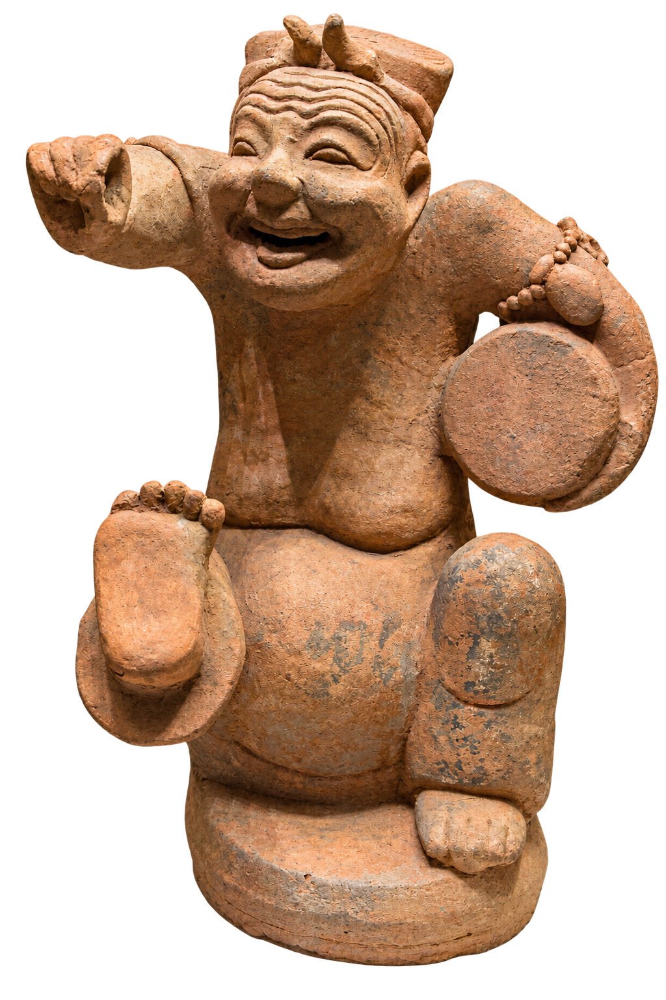

入史
入
史
INTO HISTORY
观物
OBSERVE
唤醒
AWAKEN
入境
EXPLORE

正在加载本地模型…
重新加载 ↗
拖动旋转 · 滚轮缩放
点击播放
东汉 · 陶器
击鼓
说唱俑
唤醒这件文物
↗
旋转
细节
复位
一鼓一槌，正在开场
01
观其形
02
唤其神
03
入其境
向下入席
↓
汉代宴席
全屏入境
正在展开历史现场
播放全景
西
东
左右环顾 · 上下探索
历史情境 · 创意演绎
单独看一段表演
↗
另一段历史正在眼前展开
播放历史片段
珍藏未尽
文物复活
一槌未落，笑意千年
点击播放
文物活化 · 创意演绎 · 无声呈现
走进历史现场